Using the antsrTransform class
Jeffrey T. Duda
2019-05-06
antsrTransform.RmdOverview
This document provides some examples illustrating how ANTsR may be used to work with spatial transforms. This class is based upon the itk::Transform class which provides the underlying implementations. This class may be used to apply spatial transforms to points, vectors, and images.
Transforming point and vector data
To demonstrate the methods, we will first create a linear transform and demonstrate its application to point and vector data. An AffineTransform is created then defined by setting its parameters. These parameters are the components of the matrix, in row order, followed by the translation components. If no parameters are set, an identity transform is returned. Parameters may be changed later using setAntsrTransformParameters and setAntsrTransformFixedarameters. The difference between Parameters and FixedParameters, is that the parameters are considered by optimization problems such as image registration, while the fixed parameters are not considered by the optimization. For a given transform type, the parameters and fixed parameters are described in a later section.
tx <- createAntsrTransform( precision="float", type="AffineTransform", dimension=2)
setAntsrTransformParameters(tx, c(0,-1,1,0,0,0))
setAntsrTransformFixedParameters(tx, c(128,128))
print(tx)
#> antsrTransform
#> Dimensions : 2
#> Precision : float
#> Type : AffineTransform
point = c(80,40)
outpoint = applyAntsrTransform(tx, point)
print(outpoint)
#> [1] 216 80This transforms may be applied to a set of points using apply and its variants.
ptsMat = rbind(c(80,40), c(20,30))
t(apply( ptsMat, 1, function(x) {applyAntsrTransform(tx, x)}))
#> [,1] [,2]
#> [1,] 216 80
#> [2,] 226 20
ptsList = list(c(80,40), c(20,30))
lapply( ptsList, function(x) {applyAntsrTransform(tx, x)})
#> [[1]]
#> [1] 216 80
#>
#> [[2]]
#> [1] 226 20Linear transforms may be inverted, but non-linear transforms may not be directly inverted. See later sections for more on non-linear transforms.
Applying a transform to a vector is not the same as applying the transform to a point since a vector does not have a spatial location but rather is a direction. Clearly, it is important to set the dataType correctly (default is “point” if input data is not an antsImage).
Nomenclature: talking about talking about transforms
To discuss more complex operations such as transform composition and the transforming of images, it is helpful to define a nomenclature. The nomenclature used here is based upon that defined by Avants et. al..
A physical point: \(x \in \Omega\) where \(\Omega\) is the domain, usually of an image
An image: \(I \colon \Omega^d \rightarrow \mathbb{R}^n\) where n is the number of components per pixel and \(d\) is dimensionality. A second image is J.
Domain map: \(\phi \colon \Omega_i \rightarrow \Omega_j\) where \(\rightarrow\) may be replaced with any mapping symbol
Affine mapping: \(\leftrightarrow\) a low-dimensional invertible transform: affine, rigid, translation, etc.
Affine mapping: \(\rightarrow\) designates the direction an affine mapping is applied.
Deformation field: \(\rightsquigarrow\) deformation field mapping J to I. May not be invertible.
Spline-based deformation field: \(\substack{ \rightsquigarrow \\ b }\) e.g., B-Spline field mapping \(J\) to \(I\).
Diffeomorphism: Represented as \(\leftrightsquigarrow\), these are differentiable maps with differentiable inverse. Ideally, the algorithm should output the inverse and forward mapping.
Composite mapping: \(\phi=\phi_1(\phi_2(x))\) is defined by \(\leftrightsquigarrow \rightarrow\) where \(\phi_2\) is of type \(\leftrightsquigarrow\).
Not invertible: \(\nleftrightarrow\) indicates a mapping that is not invertible.
Perform image warping: As an example, \(\rightarrow\) \(J\) represents the application of an affine transform \(\rightarrow\) to image \(J\) such that $J = J( A( x ) ) $.
Similarity measure: \(\substack{ \approx \\ s }\) or \(\approx_s\) indicates the metric \(s\) that compares a pair of images.
Transforming Images
Reference Space
When applying transforms to images, it is critical to consider the information contained in the image header: spacing, origin and direction. These all play a role in the outcome. Two images with the same dimensions but different header information may have very different outcomes when transformed with the same transformation. Additionally, To transform an image, some additional information is needed in the form of a reference or target space that defines the domain of the output image. We will illustrate how this reference space works by using a simple translation transform. First, we apply the translation and use the original image space as the reference and it is clear that the image has been shifted to the left, relative to it’s original position.
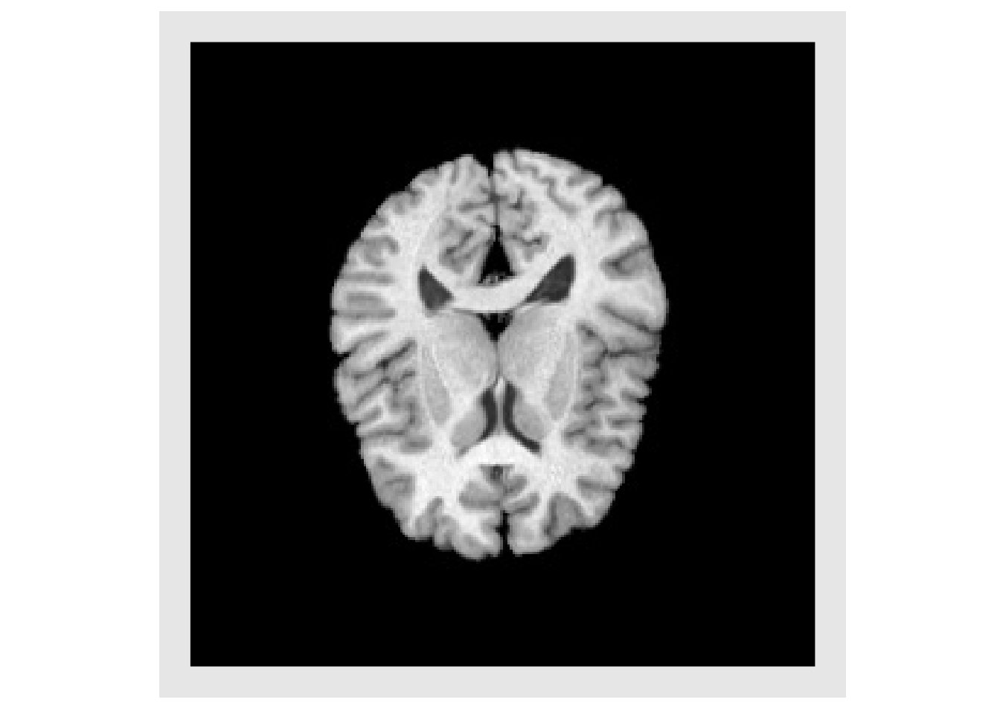
moveX1 = createAntsrTransform(dimension=2, type="Euler2DTransform", translation=c(20,0) )
shift1 = applyAntsrTransform(transform=moveX1, data=img, reference=img)
plotColor(shift1)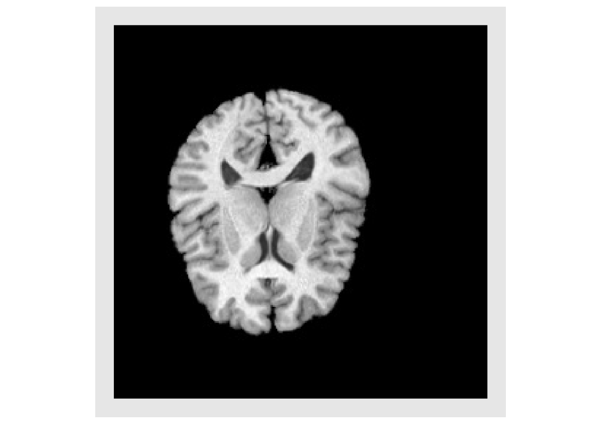
If a large translation is applied, the image begins to leave the physical domain covered by the original input image, as shown below.
moveX2 = createAntsrTransform(dimension=2, type="Euler2DTransform", translation=c(128,0) )
shift2 = applyAntsrTransform(transform=moveX2, data=img, reference=img)
plotColor(shift2)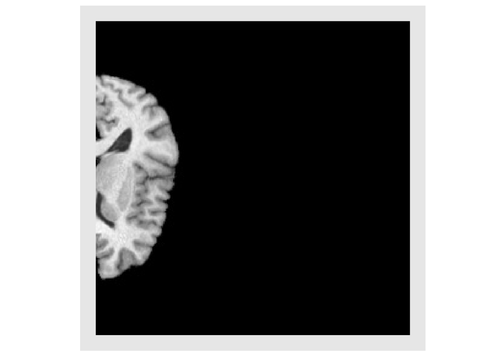
In order to see the entire brain it is necessary to define a reference space that defines the spatial domain covered by the output image. This is done with an antsImage. Now, the output image looks similar to the input image when displayed, but if the header of each image is examined it is evident that the images cover different spatial domains. It is always important consider the domains covered by images, when comparing images.
refImg = antsImageClone(img)
antsSetOrigin(refImg, c(-128,0))
#> [1] 0
shift3 = applyAntsrTransform(transform=moveX2, data=img, reference=refImg)
plotColor(shift3)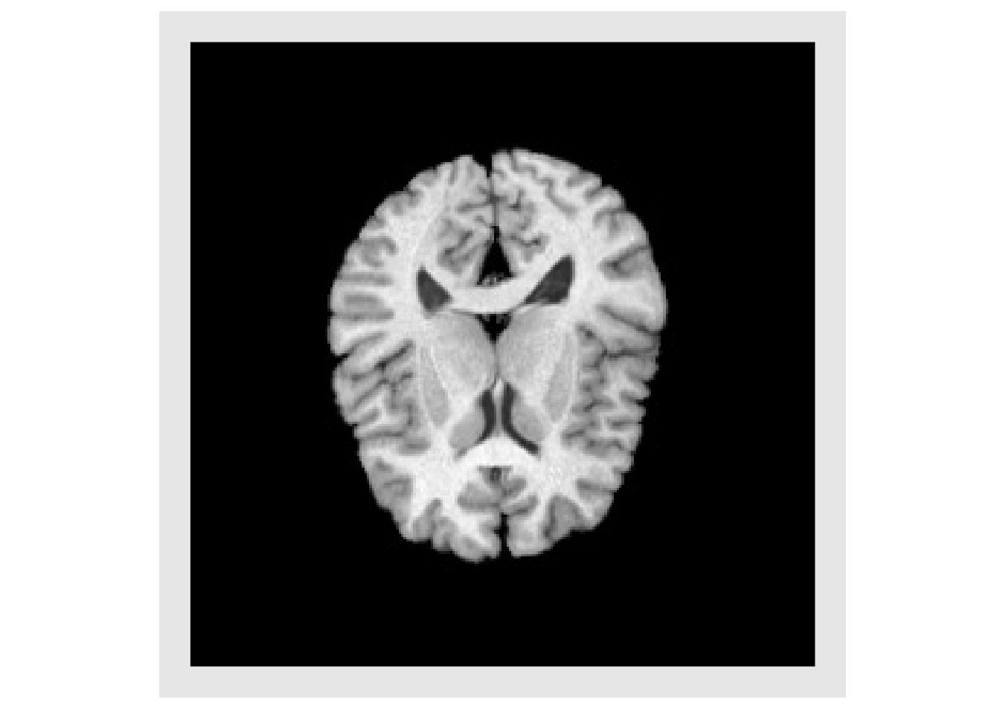
print(img)
#> antsImage
#> Pixel Type : float
#> Components Per Pixel: 1
#> Dimensions : 256x256
#> Voxel Spacing : 1x1
#> Origin : 0 0
#> Direction : 1 0 0 1
#> Filename : /Library/Frameworks/R.framework/Versions/3.6/Resources/library/ANTsRCore/extdata/r16slice.jpg
print(refImg)
#> antsImage
#> Pixel Type : float
#> Components Per Pixel: 1
#> Dimensions : 256x256
#> Voxel Spacing : 1x1
#> Origin : -128 0
#> Direction : 1 0 0 1Interpolation
Images represent a regular discrete sampling of a continuous physical space so it is often necessary to use interpolation to determine the value at each voxel. The default method is to use linear interpolation, and the full set available interpolators is:
- Linear
- NearestNeighbor
- BSpline
- Gaussian
- CosineWindowedSinc
- HammingWindowedSinc
- LanczosWindowedSinc
- BlackmanWindowedSinc
- WelchWindowedSinc
- MultiLabel
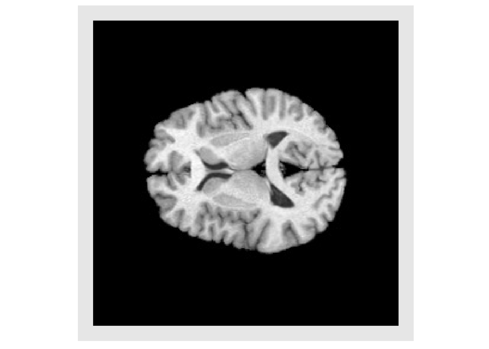
img3 = applyAntsrTransform(tx, data=img, reference=img, interpolation="Gaussian")
invisible(plotColor(img3))img4 = applyAntsrTransform(tx, data=img, reference=img, interpolation="NearestNeighbor")
invisible(plotColor(img4))img5 = applyAntsrTransform(tx, data=img, reference=img, interpolation="HammingWindowedSinc")
invisible(plotColor(img5))
Composing Transforms
There is often a need to transform an image using a sequence of multiple transform. While this could be accomplished by applying each transform individually in series, this would result in a multiple interpolations, which adds error and noise to the image each time. Instead it is better to compose the series of transforms first and then apply that single final transform. The order of the transforms in the is very important. The transforms will be applied by starting at the end of the list and working to the start. This is done to remain consistent with how transform are typically represented mathematically. For example, a composite mapping written as: \(\phi=\phi_1(\phi_2(x))\) means that \(\phi_2\) is first applied and is followed by \(\phi_1\). The example below illustrates the importance of the order.
txStretch = createAntsrTransform( "AffineTransform", dim=2 )
params = getAntsrTransformParameters( txStretch )
params[1] = 0.8
setAntsrTransformParameters(txStretch, params)
cos45 = cos(pi*45/180)
sin45 = sin(pi*45/180)
txRotate <- createAntsrTransform( precision="float", type="AffineTransform", dim=2 )
setAntsrTransformParameters(txRotate, c(cos45,-sin45,sin45,cos45,0,0) )
setAntsrTransformFixedParameters(txRotate, c(128,128))
rotateFirst = composeAntsrTransforms(list(txStretch, txRotate))
order1 = applyAntsrTransform(rotateFirst, img, img)
plotColor(order1)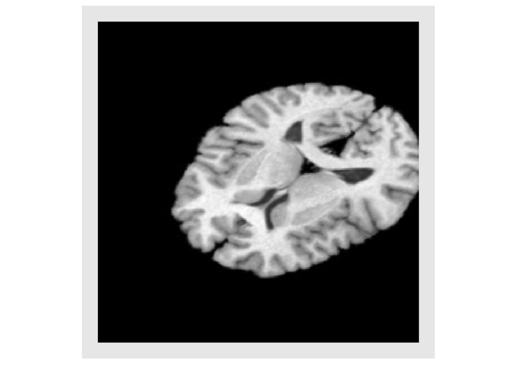
stretchFirst = composeAntsrTransforms(list(txRotate, txStretch))
order2 = applyAntsrTransform(stretchFirst, img, img)
plotColor(order2)
Non-linear transforms
Non-linear transforms defined by a displacement field may also be used. Here we create an example field and apply it to the image
x = img*0
y = img*0
it = antsImageIterator(img)
center = dim(img)/2
while ( !antsImageIteratorIsAtEnd(it) )
{
idx = antsImageIteratorGetIndex(it)
vec = idx - center
x[idx[1],idx[2]] = vec[1]
y[idx[1],idx[2]] = vec[2]
it = antsImageIteratorNext(it)
}
x = (x/max(x))*10
y = (y/max(y))*4
x[x<0] = 0
y[y<0] = 0
field = mergeChannels(list(x,y))
subimg = as.antsImage(img[110:150,110:150])
subx = as.antsImage(x[110:150,110:150])
suby = as.antsImage(y[110:150,110:150])
invisible(plotColor(subimg, vectors=list(subx,-suby)))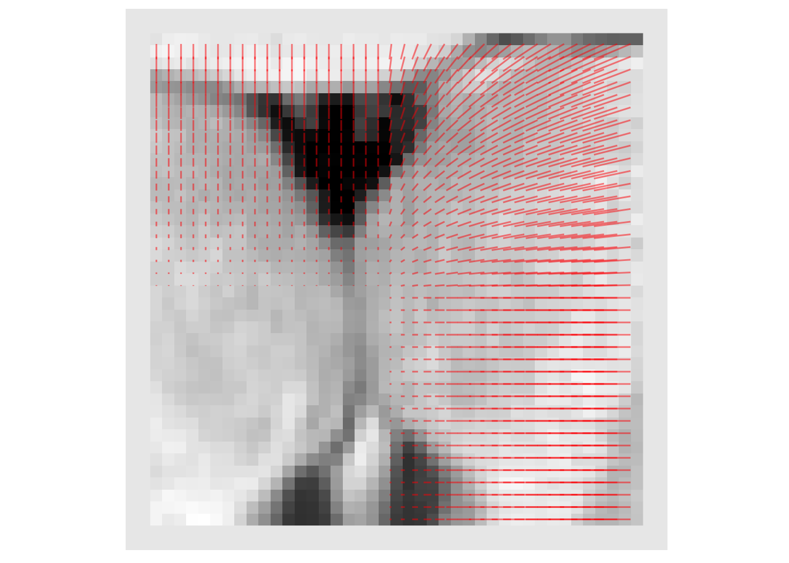
warpTx = antsrTransformFromDisplacementField( field )
warped = applyAntsrTransform(warpTx,data=img,reference=img)
invisible(plotColor(warped))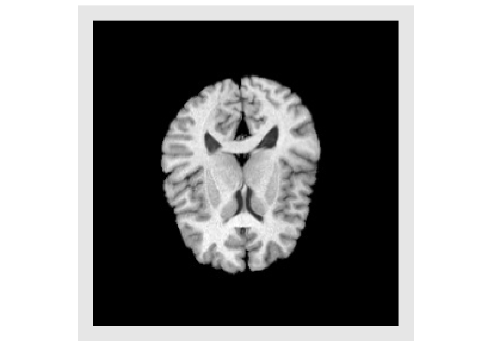
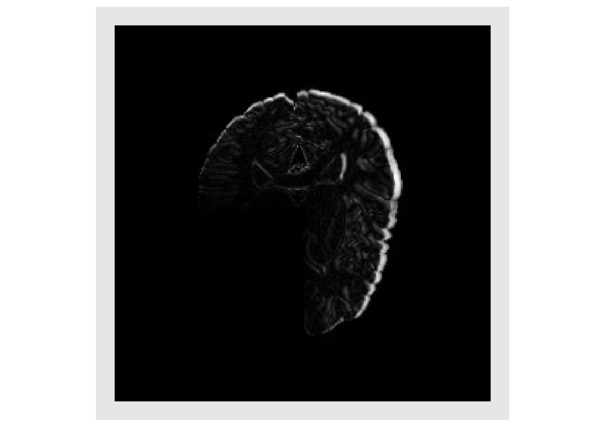
warped2 = applyAntsrTransform(transform=list(warpTx,tx), data=img, reference=img)
invisible(plotColor(warped2))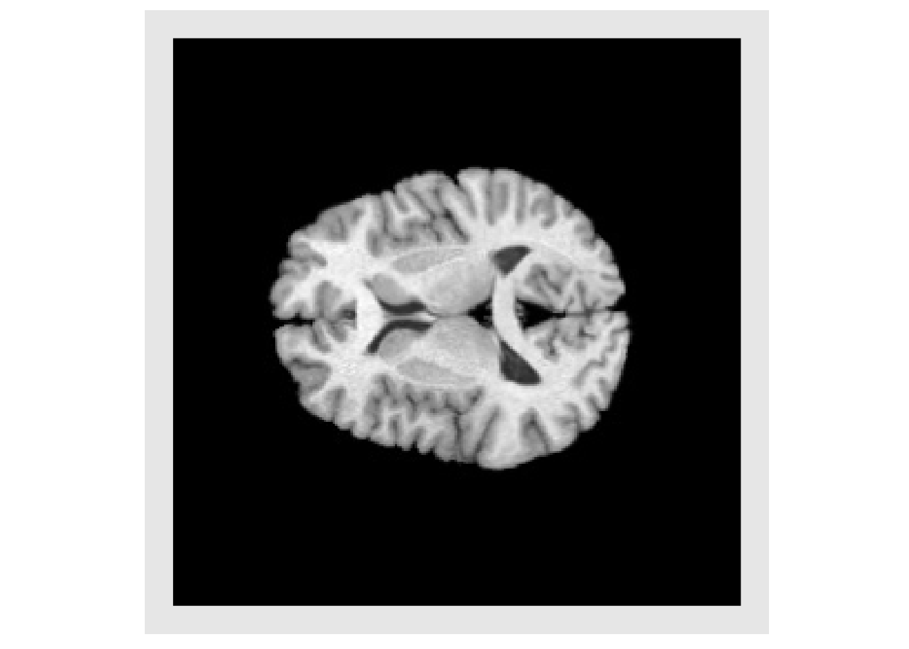
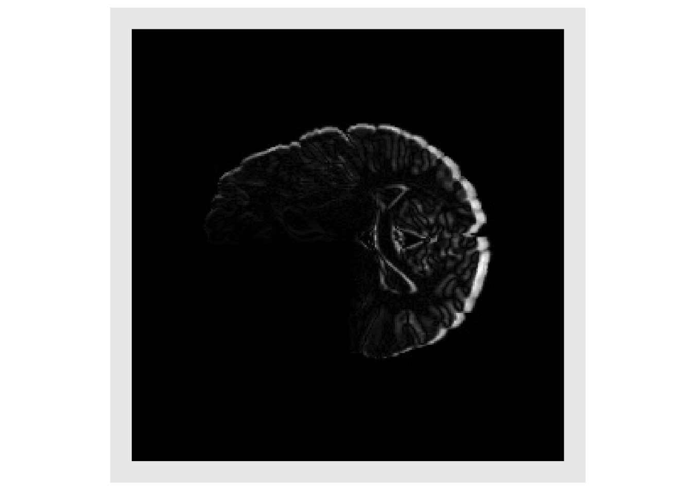
warped3 = applyAntsrTransform(transform=list(tx,warpTx), data=img, reference=img)
invisible(plotColor(warped3))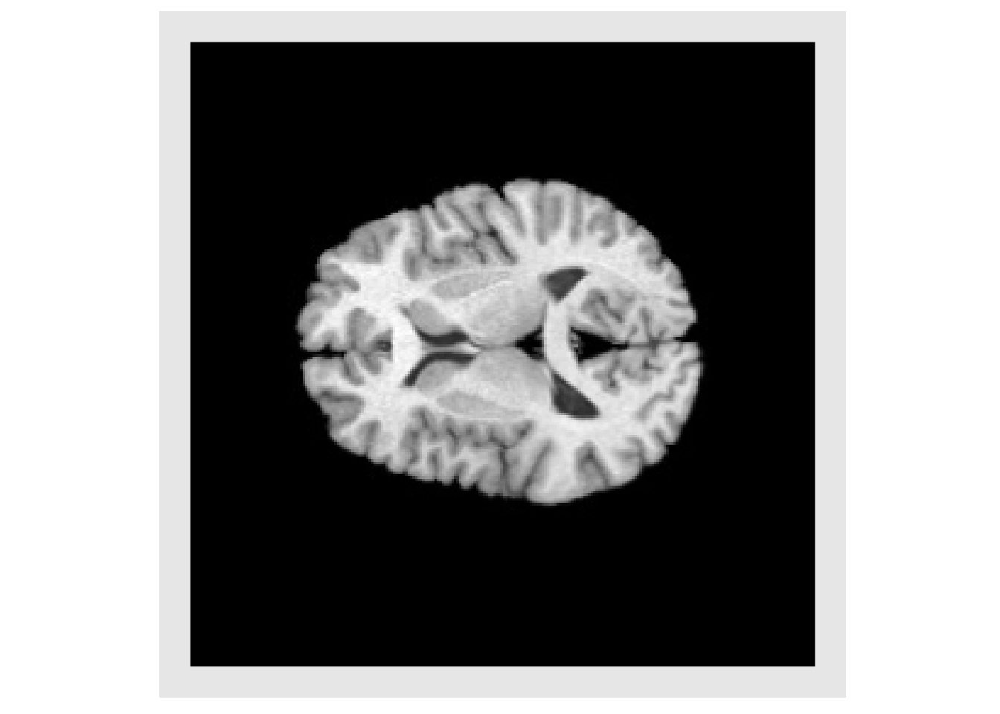
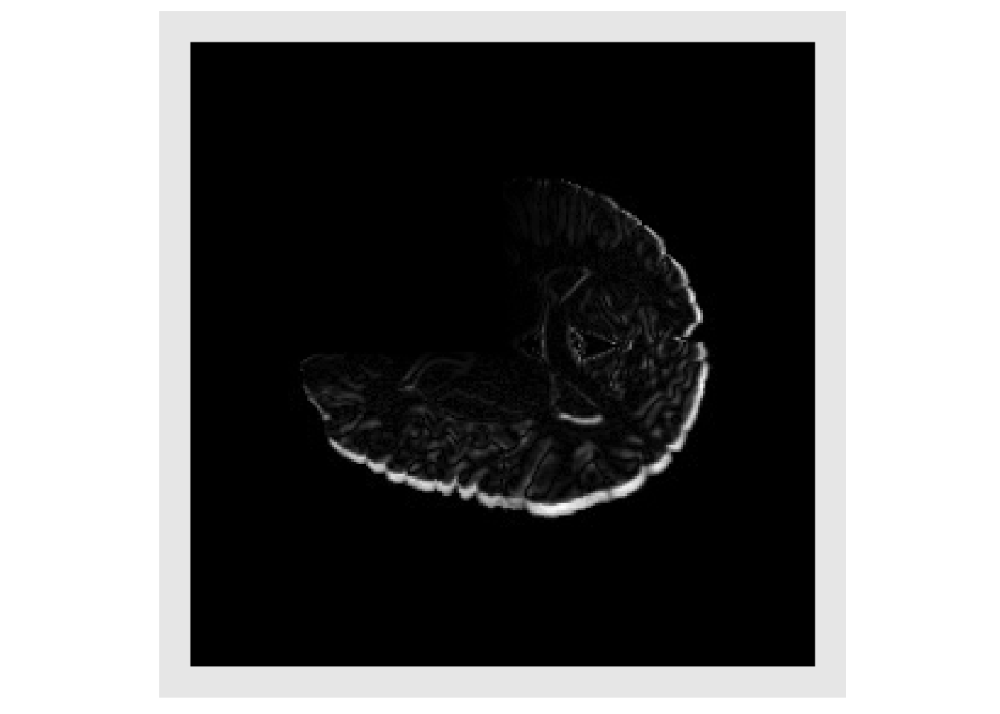
File IO
Routines are provided to read transforms from file, for both linear and non-linear. Methods for writing transforms to file are under development. It is important to note that when converting from a multichannel antsImage to a DisplacementField transform, the data is copied so later changes to the antsImage, will not propagate to the transform, the transform would need to be reinitialized with the modified antsImage. This is due to underlying differences in data representation.
Available Linear Transforms
Descriptions of the transform types comes from the ITK documentation of the associated class.
Many of these transforms have a center and offset that can be set. Here are some words of caution from the ITK documentation.
The center of rotation of an antsrTransform is a fixed point - for most transforms here, this point is not a “parameter” of the transform - the exception is that “centered” transforms have center as a parameter during optimization.
WARNING: When using the Center, we strongly recommend only changing the matrix and translation to define a transform. Changing a transform’s center, changes the mapping between spaces - specifically, translation is not changed with respect to that new center, and so the offset is updated to * maintain the consistency with translation. If a center is not used, or is set before the matrix and the offset, then it is safe to change the offset directly.
As a rule of thumb, if you wish to set the center explicitly, set before Offset computations are done.
To define an affine transform, you must set the matrix, center, and translation OR the matrix and offset
AffineTransform - ITK
An affine transformation is defined mathematically as a linear transformation plus a constant offset. If A is a constant n x n matrix and b is a constant n-vector, then y = Ax+b defines an affine transformation from the n-vector x to the n-vector y. Any two affine transformations may be composed and the result is another affine transformation. However, the order is important. This class also supports the specification of a center of rotation (center) and a translation that is applied with respect to that centered rotation. By default the center of rotation is set to the origin.
Parameters: The first (NDimension x NDimension) parameters defines the matrix in row-major order (where the column index varies the fastest). The last NDimension parameters defines the translation in each dimensions.
FixedParameters: The NDimension coordinates of the center of rotation
CenteredAffineTransform - ITK
Affine transformation with a specified center of rotation.
Parameters: The first (NDimension x NDimension) parameters define the matrix, the next N parameters define the center of rotation and the last N parameters define the translation to be applied after the coordinate system has been restored to the rotation center. Note that the Offset of the superclass is no longer in the parameters array since it is fully dependent on the rotation center and the translation parameters.
FixedParameters: None
CenteredEuler3DTransform - ITK
This transform applies a rotation about a specific coordinate or centre of rotation followed by a translation.
Parameters: An array with 9 values, ordered as follows:
- p[1] = angle around x-axis (in radians)
- p[2] = angle around y-axis (in radians)
- p[3] = angle around z-axis (in radians)
- p[4] = x coordinate of center
- p[5] = y coordinate of center
- p[6] = z coordinate of center
- p[7] = x component of translation
- p[8] = y component of translation
- p[9] = z component of translation
FixedParameters: None
CenteredRigid2DTransform - ITK
This transform applies a rigid transformation is 2D space. The transform is specified as a rotation around arbitrary center and is followed by a translation. The main difference between this class and its superclass Rigid2DTransform is that the center of rotation is exposed for optimization.
Parameters: An array of 5 elements ordered as follows:
- p[1] = angle (in radians)
- p[2] = x coordinate of center
- p[3] = y coordinate of center
- p[4] = x component of translation
- p[5] = y component of translation
FixedParameters: None
CenteredSimilarity2DTransform - ITK
This transform applies a homogenous scale and rigid transform in 2D space. The transform is specified as a scale and rotation around a arbitrary center and is followed by a translation. given one angle for rotation, a homogeneous scale and a 2D offset for translation.
The main difference between this class and its superclass Similarity2DTransform is that the center of transformation is exposed for optimization.
Parameters: an array of 6 elements ordered as follows:
- p[1] = scale
- p[2] = angle (in radians)
- p[3] = x coordinate of the center
- p[4] = y coordinate of the center
- p[5] = x component of the translation
- p[6] = y component of the translation
FixedParameters: None
Euler2DTransform - ITK
This transform applies a rigid transformation is 2D space. The transform is specified as a rotation around arbitrary center and is followed by a translation. This transform is basically is a synonym for Rigid2DTransform.
Parameters: An array of 3 elements ordered as follows:
- p[1] = angle (in radians)
- p[2] = x component of translation
- p[3] = y component of translation
FixedParameters: center of rotation
- p[1] = x coordinate of center
- p[2] = y coordinate of center
Euler3DTransform - ITK
This transform applies a rotation and translation to the space given 3 Euler angles and a 3D translation. Rotation is about a user specified center.
Parameters: An array of 6 elements, ordered as follows:
- p[1] = angle around x-axis (in radians)
- p[2] = angle around y-axis (in radians)
- p[3] = angle around z-axis (in radians)
- p[4] = x component of translation
- p[5] = y component of translation
- p[6] = z component of translation
FixedParameters: An array of 3 element, defining the center of rotation
- p[1] = x coordinate of center
- p[2] = y coordinate of center
- p[3] = z coordinate of center
QuaternionRigidTransform - ITK
This transform applies a rotation and translation to the space given a quaternion and a 3D translation. Rotation is about a user specified center.
Parameters: An array of 7 elements.
- p[1] = x components of rotation axis
- p[2] = y components of rotation axis
- p[3] = z components of rotation axis
- p[4] = angle around rotation axis (in radians)
- p[5] = x component of translation
- p[6] = y component of translation
- p[7] = z component of translation
FixedParameters: An array of 3 elements defining the center of rotation
- p[1] = x coordinate of center
- p[2] = y coordinate of center
- p[3] = z coordinate of center
Rigid2DTransform - ITK
This transform applies a rigid transformation is 2D space. The transform is specified as a rotation around arbitrary center and is followed by a translation.
Parameters: An array of 3 elements ordered as follows:
- p[1] = angle (in radians)
- p[2] = x component of translation
- p[3] = y component of translation
FixedParameters: center of rotation
- p[1] = x coordinate of center
- p[2] = y coordinate of center
Similarity2DTransform - ITK
This transform applies a homogenous scale and rigid transform in 2D space. The transform is specified as a scale and rotation around a arbitrary center and is followed by a translation. Given one angle for rotation, a homogeneous scale and a 2D offset for translation.
Parameters: scale, angle and translation, ordered as follows:
- p[1] = scale
- p[2] = angle (in radians)
- p[3] = x component of translation
- p[4] = y component of translation
FixedParameters: center of rotation
- p[1] = x coordinate of center
- p[2] = y coordinate of center
Similarity3DTransform
This transform applies a rotation, translation and isotropic scaling to the space.
Parameters: An array of 7 elements
- p[1] = angle around x-axis (in radians)
- p[2] = angle around y-axis (in radians)
- p[3] = angle around z-axis (in radians)
- p[4] = x coordinate of center
- p[5] = y coordinate of center
- p[6] = z coordinate of center
- p[7] = scale
FixedParameters: center of rotation
- p[1] = x coordinate of center
- p[2] = y coordinate of center
- p[3] = z coordinate of center